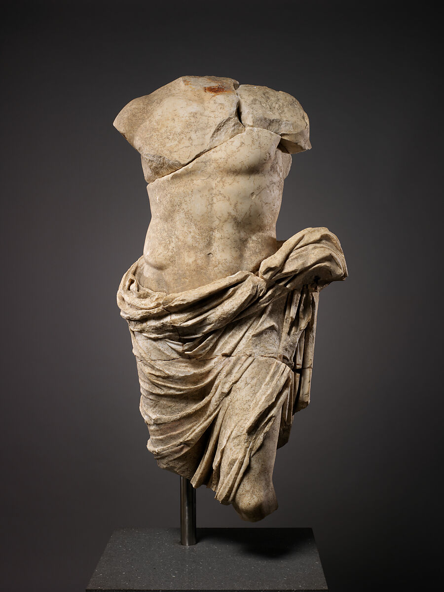
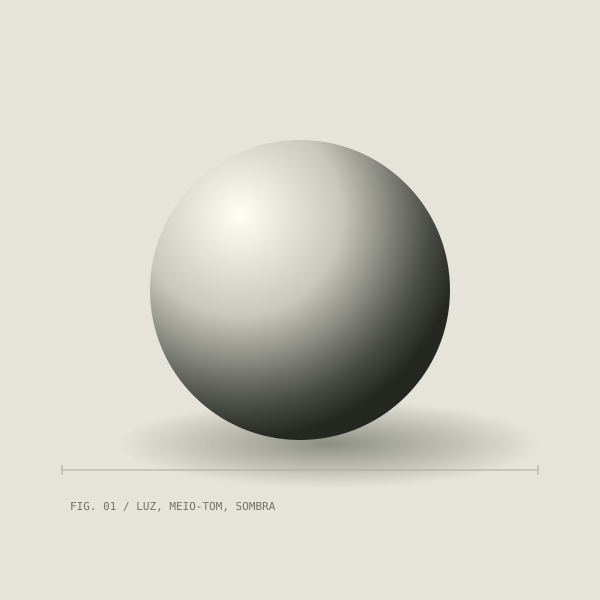
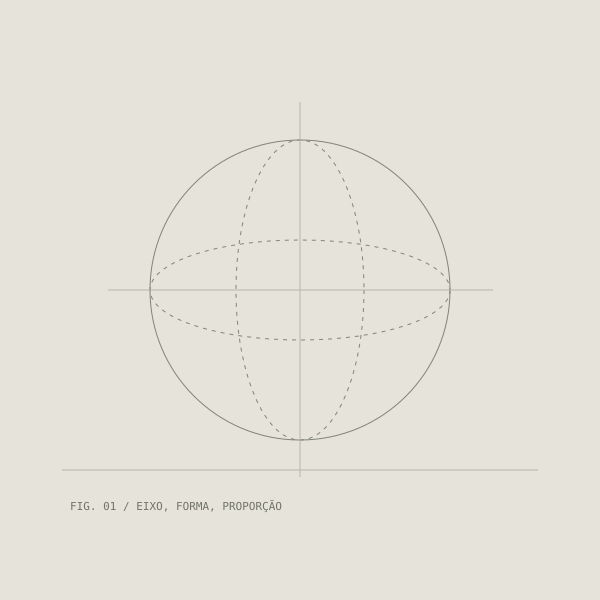

APRENDIZ · BLACK & GREY
Um olhar
em construção.
Entre a natureza e a escultura, um caminho de estudo em mini realismo. Sou Paulo Leite. Este é o começo do meu traço.
Ver o portfólio ↘Novidades no Instagram ↗
REFERÊNCIA VISUAL / THE METAs novas postagens ficam no Instagram. As imagens desta primeira versão são referências e demonstrações identificadas, não obras concluídas de Paulo.
↓01 / PORTFÓLIO DE ESTUDOS
Aprender a ver.
Espaço para observar, experimentar
e registrar cada tentativa.
02 / DIÁRIO DE EVOLUÇÃO
O processo
também é parte.
Um lugar para comparar tentativas e perceber o que muda: a luz, o volume, a intenção.
Do contorno ao volume
Arraste para comparar duas ilustrações digitais de exemplo. Não representam evolução real de Paulo.


03 / QUEM ESTÁ POR TRÁS DO TRAÇO
Paulo no nome.
Leite no papel.
Meu interesse está nos pequenos detalhes: na textura dos animais, no volume das estátuas e no que uma composição pode sugerir sem dizer tudo.
Estou desenvolvendo minha linguagem em mini realismo preto e cinza. Este espaço nasce para reunir estudos, referências e descobertas desse percurso.
Em fase de aprendizado. Sem agenda de tatuagem ou orçamentos neste momento.
04 / REFERÊNCIAS
O que alimenta
o olhar.
Fontes para observar formas, luz e textura.
CONTINUE ACOMPANHANDO
Cada traço,
um próximo passo.
Acompanhar no Instagram ↗@pauloleitesoaresneto · Estudos e processo criativo